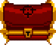
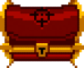
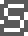
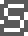

-
Para empezar existen 5 pisos básicos dentro de la mazmorra, cada uno más difícil que el anterior, y dentro de cada piso existen un gran numero de salas comunes con enemigos con los cuales pelear, 2 salas dedicadas a darte un cofre, una tienda y una sala dedicada a un jefe el cual hay que derrotar para progresar al siguiente piso, también existen otros tipos de salas especiales los cuales dejare que a prendas a tu propio ritmo.
-
Dentro del juego existe una forma de categorizar los objetos y armas, los mismo siendo D, C, B, A y S siendo D los “peores” y S los “mejores”, (esto no implica que los objetos de categoría C son siempre mejores que los de categoría D) esta forma de categorizar armas y objetos es representado por los cofre mediante los cuales dichos objetos y armas son conseguidos, es decir que un objeto de categoría B provendrá de un cofre de categoría B.


 


 

-
La tienda es un lugar donde intercambiar la moneda del juego por una variedad de diferentes objetos, dentro de dichos objetos entran cosas como vida, escudos, llaves, armas y objetos pasivos o activos. Los objetos de dicha tienda aumentan de precio con cada piso que pasa.
-
La sala del jefe es el reto final del piso, una vez derrotado seras recomenzado con un arma u objeto y otras cosas como corazones, llaves, etc. siempre es recomendable intentar completar dicho jefe sin recibir daño.